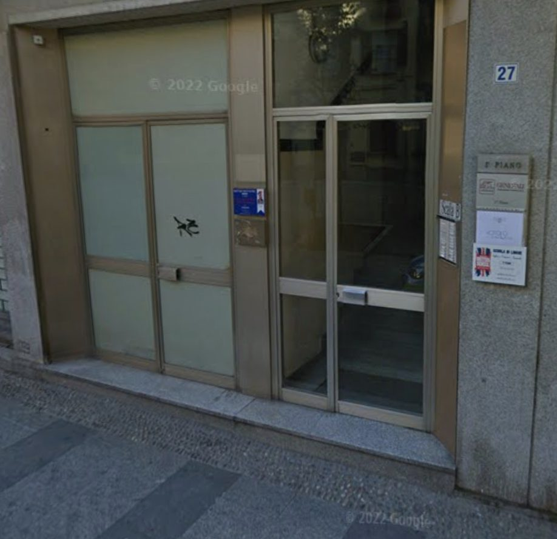
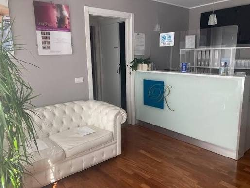
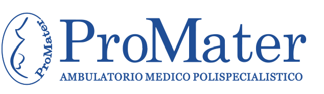
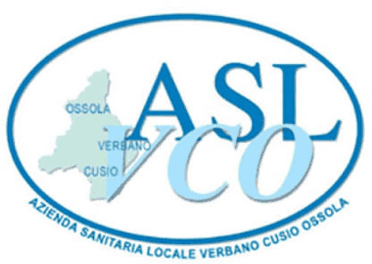
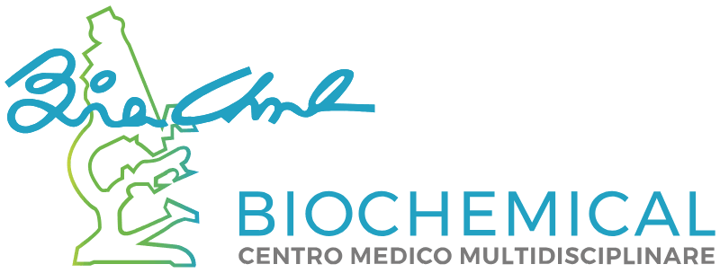

Visita dermatologica
Valutazione della pelle, delle mucose, dei capelli e delle unghie, con anamnesi ed esame clinico.
Dermatologia e Venereologia — Verbania
La Dott.ssa Roberta Zanetta riceve nel suo studio di Verbania, in Piazza Castello. Ogni visita ha il tempo che serve.
Stesso numero per prenotazioni e informazioni.
Il medico
Specialista in Dermatologia e Venereologia, la Dott.ssa Roberta Zanetta riceve su appuntamento nel suo studio di Verbania, in Piazza Castello.
La visita comprende la valutazione della pelle, delle mucose, dei capelli e delle unghie. Per il controllo dei nei viene impiegato il dermatoscopio.
Prestazioni
Per informazioni su costi e modalità di pagamento chiama lo studio: te lo diciamo prima di fissare l’appuntamento, senza impegno.
Valutazione della pelle, delle mucose, dei capelli e delle unghie, con anamnesi ed esame clinico.
Esame dei nei con dermatoscopio e archiviazione delle immagini, per confrontarle nei controlli successivi.
Valutazione mirata di una lesione comparsa da poco o cambiata di forma, colore o dimensione.
Inquadramento della forma di acne e impostazione della terapia, con controlli nel tempo.
Diagnosi e gestione della psoriasi cutanea, con valutazione delle terapie disponibili.
Valutazione delle dermatiti, individuazione dei fattori scatenanti e terapia.
Inquadramento delle manifestazioni orticarioidi e delle reazioni cutanee di natura allergica.
Diagnosi delle infezioni da funghi di cute e unghie e impostazione del trattamento.
Valutazione e trattamento delle lesioni di origine virale della cute e delle mucose.
Valutazione tricologica della caduta dei capelli e delle patologie del cuoio capelluto.
Valutazione e gestione delle infezioni a trasmissione sessuale con manifestazioni cutanee o mucose.
Valutazione delle lesioni legate all’esposizione solare e dei tumori cutanei, con indicazioni sul percorso da seguire.
Trattamento ambulatoriale di alcune lesioni cutanee mediante applicazione di azoto liquido.
Piccoli interventi ambulatoriali con eventuale invio del prelievo all’esame istologico.
Valutazione dei problemi della pelle in bambini e ragazzi.
Dove ti ricevo
Lo studio è in Piazza Castello 27, a Verbania Intra. Le visite sono su appuntamento, così da ridurre l’attesa in sala.





Prenotazioni
Le visite sono su appuntamento. Chiama lo studio: è lo stesso numero per prenotazioni e informazioni.
| Lunedì | 14:30 – 19:00 |
|---|---|
| Martedì | 10:00 – 17:00 |
| Mercoledì | 14:00 – 18:00 |
| Giovedì | 14:30 – 19:00 |
| Venerdì | 10:00 – 17:00 |
| Sabato | chiuso |
| Domenica | chiuso |
Le visite si svolgono solo su appuntamento.